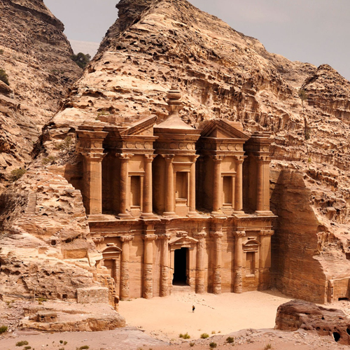
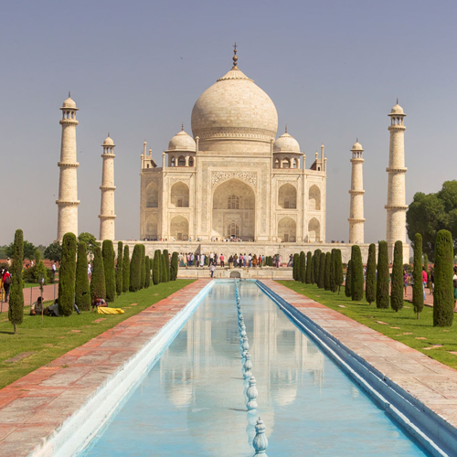
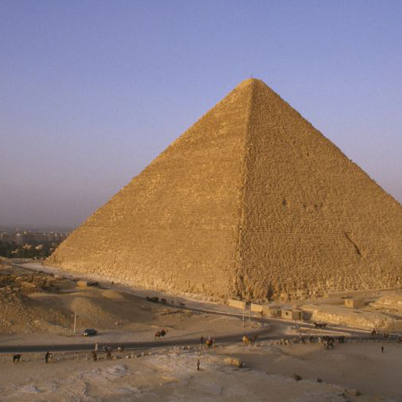

These are the most famous world wonders
| Chichén Itzá is a complex of Mayan ruins on Mexico's Yucatán Peninsula. A massive step pyramid, known as El Castillo or Temple of Kukulcan, dominates the ancient city, which thrived from around 600 A.D. to the 1200s. | |
The Great Wall of China is a series of fortifications in China. They were built across the historical northern borders of ancient Chinese states and Imperial China as protection against various nomadic groups from the Eurasian Steppe. | |
| The Lighthouse of Alexandria, sometimes called the Pharos of Alexandria, was a lighthouse built by the Ptolemaic Kingdom of Ancient Egypt, during the reign of Ptolemy II Philadelphus. It has been estimated to have been at least 100 metres in overall height. | |
Petra is a famous archaeological site in Jordan's southwestern desert. Dating to around 300 B.C., it was the capital of the Nabatean Kingdom. |  |
| The Taj Mahal is an ivory-white marble mausoleum on the right bank of the river Yamuna in Agra, Uttar Pradesh, India. |  |
The Great Pyramid of Giza is the largest Egyptian pyramid. It served as the tomb of pharaoh Khufu, who ruled during the Fourth Dynasty of the Old Kingdom. |  |